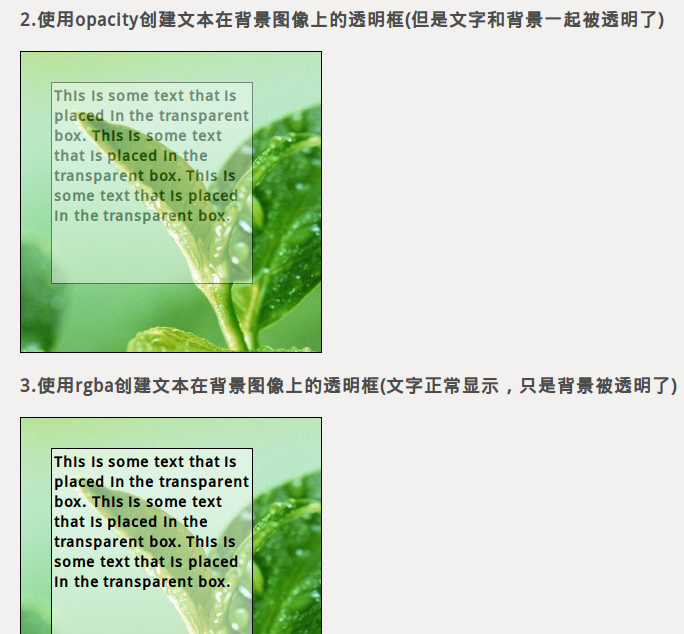

先看看效果图
 查看演示 下载源码要实现背景图像透明，主要是通过opacity这个属性来设置，但是使用这个有一个问题，那就是opacity后代元素会随着一起具有透明性，而RGBA不具有这样的问题。更多详细内容参考：CSS3 RGBA
下面是css源代码：
*{margin:0;padding:0;}
body{margin:20px;}
h3,div{margin:20px;}
img{opacity:0.5;}
.opacity1{width:300px;height:300px;background:url(../../images/back.jpg);}
.opacity1:hover{ opacity:0.5;filter:alpha(opacity=50);}
.background2{width:300px;height:300px;background:url(../../images/back.jpg);
border: 1px solid black;}
.opacity2{width:200px;height:200px;background:#ffffff;border: 1px solid black;
margin:30px;opacity:0.4;filter:alpha(opacity=40); }
.opacity2 p{font-weight:bold;color:#000000;padding:2px;}
.background3{width:300px;height:300px;background:url(../../images/back.jpg);
border: 1px solid black;}
.opacity3{width:200px;height:200px;background:rgba(255,255,255,0.5);
border: 1px solid black;margin:30px;}
.opacity3 p{font-weight:bold;color:#000000;padding:2px;}